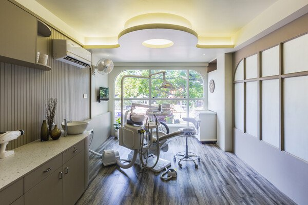
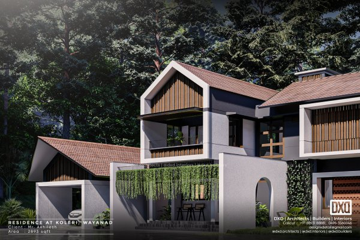
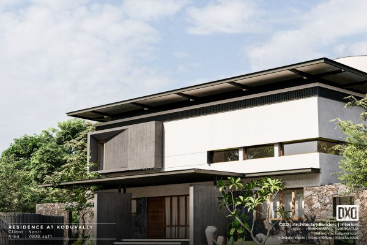

A palette for each space
Soft plaster curves at Mankasurath. Light, calm tones at Dr. Saleem's. Laterite and exposed concrete at Orchard House. Each palette suits how the space is used.



Architects · Builders · Interiors · Calicut
Tropical homes, calm clinics and a fashion studio, designed and built by one team in Calicut.
See our projectsWebsite concept for DXD Architects
Soft plaster curves at Mankasurath. Light, calm tones at Dr. Saleem's. Laterite and exposed concrete at Orchard House. Each palette suits how the space is used.


At Box over the Wall in Koduvally, stone cladding meets clean white walls, inclined angles and louvers.

At Noushad Residence in Tavanur, plants and design elements quietly separate private rooms from shared ones.

Six projects across Kerala, from a 775 sq ft fashion studio to a 4,305 sq ft home.
Homes planned around Kerala's light, rain and greenery.
Clinics, studios and homes, detailed down to the furniture, lighting and finishes.
The studio also builds, so the design carries through to the finished site.
Retail and healthcare spaces planned for smooth daily work and a calm visitor experience.
DXD Architects designs and builds homes, clinics and commercial spaces from Calicut, with projects in Wayanad, Malappuram and Kannur.
Principal architect Ar. Mansoor Anchukandan leads the studio. Each project starts from the client's own ideas and the setting around the site.
About the studio